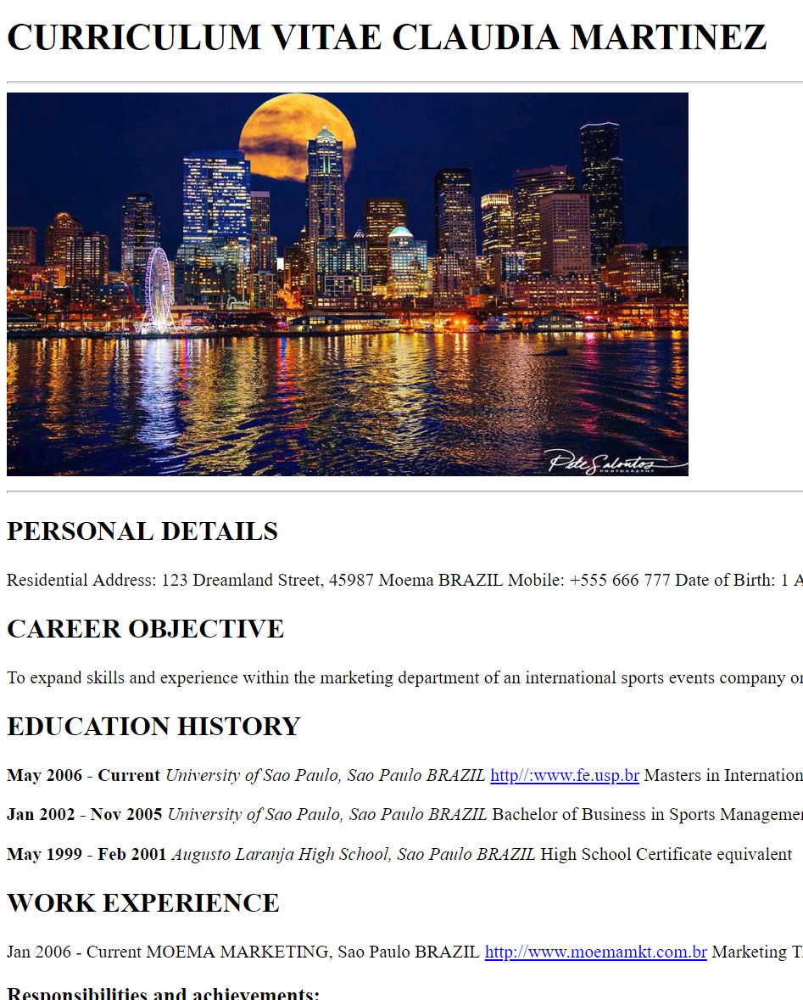
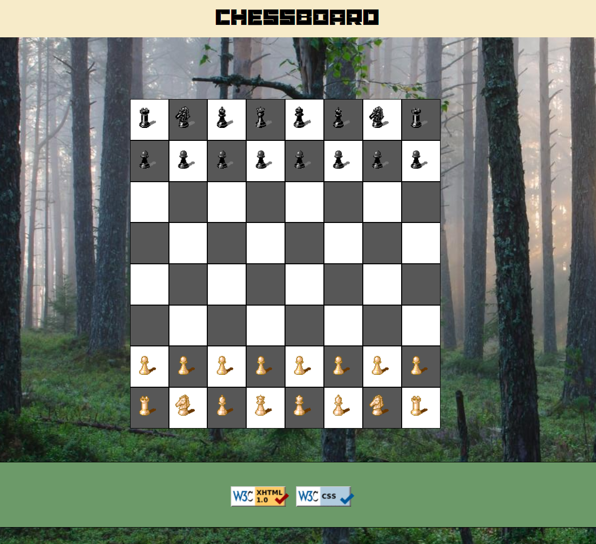

Artifact Assignments
Here are all of the artifacts I've done for this class so far:
In this artifact we created a module resume with HTML only. The information is fictitious.

Artifact02: Chessboard
This is a chessboard that I made using CSS and without the use of tables.

Artifact03: Rhombus Creator
This artifact was made using CSS and Javascript. It allows the user to create any size rhombus made of different symbols and alternating colors.

Artifact04: Contact Form
Artifact 4 is a contact form and the Javascript attached to it validates that the user fills out all the required fields with the proper characters. If something is incorrect, it displays an appropriate error.

Artifact05: Slideshow
This is a slideshow of different images, made using CSS and Javascript. The slideshow is on automatic but the user can use the buttons to navigate